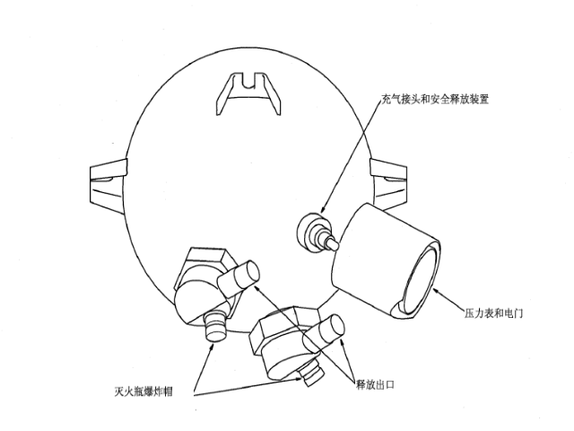

爆炸帽的作用是使密封片破裂，使灭火瓶内的Halon（卤代烃）灭火剂开始释放。

爆炸帽是用电触发的爆炸装置。装在可破裂的密封片旁边。正常情况下，密封片使增压的灭火瓶密封。
爆炸帽位于灭火瓶底部的释放组件内。
当接触或移动爆炸帽时，确保爆炸帽上装有保护帽或分流插头。爆炸帽具有爆炸性，偶然被引爆会引起伤害。
当转动灭火警告电门，爆炸帽爆炸，使密封片破裂，灭火瓶内的高压氮气将Halon（卤代烃）灭火剂压出释放口。